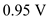
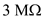
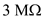

Step 1:
(a)
Refer to Figure P7.13 in the textbook for the common source amplifier circuit.
Write the expression for drain current of an NMOS transistor.

Here,  is the conduction parameter.
is the conduction parameter.
Neglect the feedback current in the network.
Substitute for and for  .
.
Calculate the gate-source voltage.
Substitute  for
for  and for
and for  .
.
Thus, the gate-to-source voltage of the network, is .
is .
Step 2:
Calculate the gate voltage of the network.
Substitute 0 for  .
.
Calculate the dc current in the feedback network.
Substitutefor  and
and  for
for  .
.
Thus, the dc current in the feedback network, is .
is .
The dc current in the feedback network is very small compared to. So, neglecting the feedback current in the network is correct.
Step 3:
Calculate the drain source voltage of the network.
Substitute for  ,
, for
for , for
, for  and
and  for
for .
.
Thus, the drain source voltage of the network, is .
is .
Step 4:
Calculate the output resistance of the network.
Substitutefor  and
and  for
for  .
.
Calculate the output resistance of transistor.

Substitutefor  and for.
and for.
Thus, the output resistance of transistor  is very large compared to the output resistance of the network
is very large compared to the output resistance of the network  . Hence, the effect of
. Hence, the effect of  can be negligible.
can be negligible.
Step 5:
(b)
Draw the small signal equivalent circuit diagram.
Step 6:
Apply nodal analysis to node 2.
 …… (1)
…… (1)
Calculate the transconductance of the network.
Step 7:
Calculate the small signal voltage gain of the network from equation (1).
Substitute for  ,
, for
for  and for
and for  .
.
Thus, the small signal voltage gain of the network, is .
Step 8:
When the NMOS transistor remains in saturation, the largest output voltage is obtained at minimum drain to source voltage of the transistor.
Largest signal voltage lies in the range of to . Hence, the largest output voltage is,
. Hence, the largest output voltage is,
Substitute for
for and
and for
for in the equation.
in the equation.
Thus, the peak of the largest output sine wave signal, is.
is.
Calculate the input voltage at maximum output voltage.
Substitute for .
for .
Thus, the input voltage at maximum output voltage, is .
Step 9:
(c)
Draw the equivalent circuit diagram with dummy voltage source at the input.
Step 10:
Apply nodal analysis to node 2.
Step 11:
Apply nodal analysis to node 1.
Substitutefor  .
.
Step 12:
 for
for  ,
, for
for ,
,  for
for  and
and  for
for  .
. is .
is .